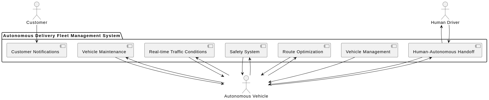
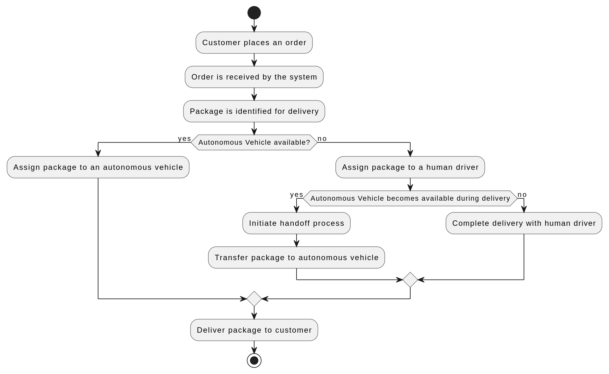

autonomous delivery fleet
Design to illustrate the architecture of autonomous delivery fleet

Solution for maintaining constant
communication with the autonomous vehicles, including remote diagnostics
and updates
Solution:
-
Telematics and IoT Devices: Equip each autonomous vehicle with
telematics and IoT (Internet of Things) devices. These devices can
include GPS, sensors, and communication modules.
-
Data Communication Protocol: Implement a robust data communication
protocol for real-time data exchange between the vehicles and the
central system. MQTT (Message Queuing Telemetry Transport) is a suitable
choice for this purpose due to its lightweight and efficient nature.
-
Telematics Server: Set up a centralized telematics server within the
Centralized Control System to receive and process data from the
autonomous vehicles.
-
Data Streams:
-
Real-time Tracking: Vehicles continuously send location, speed, and
sensor data to the server for real-time tracking and monitoring.
-
Vehicle Health: Regularly transmit diagnostic data regarding vehicle
health, including battery status, tire pressure, engine performance,
and more.
-
Remote Updates: Implement a secure channel for sending software
updates to the vehicles over-the-air (OTA).
-
Alerts and Notifications: Implement an alerting system that immediately
notifies the central control system and relevant personnel in case of
issues or anomalies. Use email, SMS, or in-app notifications for this
purpose.
-
Remote Diagnostics: Use the data received to conduct remote diagnostics.
Analyze the data for anomalies, and, if necessary, schedule maintenance
or repairs.
-
OTA Updates: Utilize the remote software update capability to send bug
fixes, new features, and safety enhancements to the autonomous vehicles.
Ensure that the updates are securely delivered and installed without
compromising the vehicle's safety.
-
Redundancy and Failover: Implement redundancy and failover mechanisms to
ensure uninterrupted communication. Consider using multiple
communication channels or providers for robustness.
-
Data Security: Implement robust data encryption and authentication
measures to protect data transmission between vehicles and the central
system.
-
Scalability: Ensure that the system is scalable to accommodate a growing
fleet of autonomous vehicles.
Flowchart detailing the process of identifying a
package for delivery, assigning it to an autonomous vehicle, and
successfully completing the delivery

Potential ethical and legal challenges associated with
autonomous vehicles and how my system addresses them
Ethical and Legal Challenges:
-
Data Privacy: Autonomous vehicles collect a vast amount of data,
including location, images, and sensor data. Ensure that the system
complies with data privacy regulations, anonymizes data when possible,
and secures sensitive customer information.
-
Liability: In the event of an accident or system failure, determining
liability can be complex. The system should have mechanisms to log and
store data for accident analysis and provide clear records of vehicle
behavior.
-
Safety: The safety of customers and the public is paramount. Implement
rigorous testing and safety measures in the software. Regularly update
the system to fix potential safety issues.
-
Job Displacement: The introduction of autonomous vehicles may impact
human drivers' livelihoods. If your system supports human-autonomous
handoffs, it can address this concern by ensuring that the transition
between human and autonomous drivers is seamless and that training is
provided to human drivers to operate the system safely.
-
Regulatory Compliance: Ensure that your system complies with local and
national regulations related to autonomous vehicles, including
licensing, testing, and reporting requirements.
-
Cybersecurity: Protect the system against cyber threats and hacking
attempts, which could lead to vehicle hijacking or data breaches.
Regularly update and patch the software to address security
vulnerabilities.
-
Transparency: Make sure that the system provides a clear and
understandable user interface for customers and drivers. Transparency
can help build trust in the technology.
-
Environmental Impact: Consider the environmental impact of the
autonomous fleet, such as energy consumption and emissions. Implement
efficient route optimization to reduce environmental footprint.
-
Accessibility: Ensure that the system is accessible to all customers,
including those with disabilities, and that it doesn't create new
barriers.
-
Insurance: Address the issue of insurance for autonomous vehicles. Work
with insurance providers to determine appropriate coverage and cost
structures.